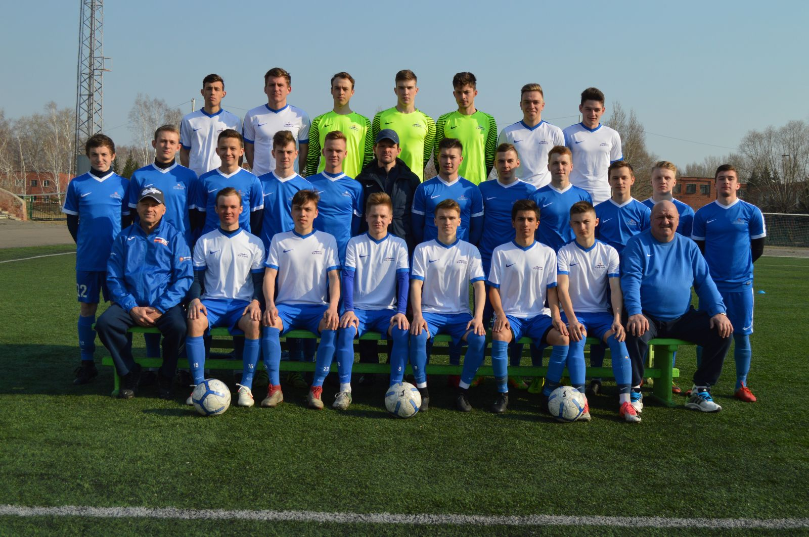

Основан в 1946 году. Выступает во Втором дивизионе, зона «Восток». Омский «Иртыш» — одна из старейших и популярнейших футбольных команд Сибири и Дальнего Востока.
Прежние названия:
Команда вырастила 34 мастера спорта – результат, каким не может похвастаться ни одна футбольная дружина за Уральским хребтом. В 1960 году за второе место в турнире сильнейших российских команд класса «Б» 13 футболистов «Иртыша» получили звание «Мастер спорта».
